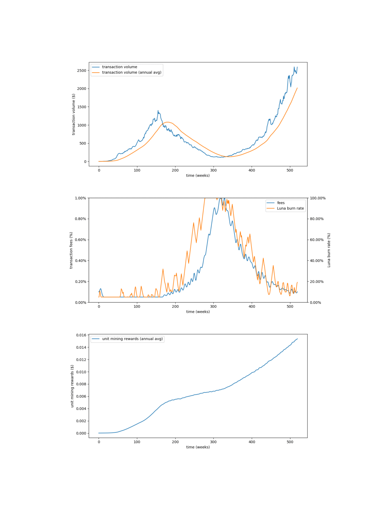

Terra 白皮书
Terra Money：稳定性和采用¶
摘要¶
虽然许多人看到价格稳定的加密货币结合了法定货币和比特币的优点，但没有多少人有明确的计划采用这种货币。由于货币作为交换媒介的价值主要受其网络效应驱动，因此成功的新数字货币需要最大限度地采用才能发挥作用。我们提出了一种加密货币 Terra，它既价格稳定又受增长驱动。它通过稳定的挖矿激励措施实现弹性货币供应，实现价格稳定。它还使用其挖矿业务产生的铸币税作为交易激励，从而促进采用。法币经济和区块链经济都需要去中心化、价格稳定的货币协议。如果这样的协议成功，那么它将作为加密货币的最佳用例产生重大影响。
1 引言¶
加密货币的价格波动性是学术界和市场观察者研究得很透彻的问题（例如，参见 Liu 和 Tsyvinski，2018 年，Makarov 和 Schoar，2018 年）。大多数加密货币，包括比特币，都有预定的发行时间表，加上强烈的投机需求，导致价格剧烈波动。比特币的极端价格波动是其作为交换或价值储存媒介被采用的主要障碍。直观地说，没有人愿意用一种可能在几天内价值翻倍的货币进行支付，也没有人愿意用在交易结算之前其价值可能会大幅下降的货币进行支付。当交易需要更多时间时，问题会更加严重，例如对于抵押贷款或雇佣合同等延期付款，波动性会严重损害合同的一方，使得在这些环境中使用现有数字货币的成本高得令人望而却步。
Terra 协议解决这些问题的核心理念是，具有弹性货币政策的加密货币将保持稳定的价格，保留比特币的所有抗审查性，并使其可用于日常交易。然而，价格稳定性不足以广泛采用一种货币。货币本质上具有强大的网络效应：除非有足够数量的商户准备好接受，否则客户不太可能转向新货币，但与此同时，商户没有理由投入资源和教育员工接受新货币除非有大量客户需求。出于这个原因，比特币在支付领域的采用仅限于自行投资于加密货币的小企业的所有者。我们的信念是，虽然弹性货币政策是解决稳定性问题的方法，但有效的财政政策可以推动采用。此外，Terra 协议通过有效的财政支出制度为用户加入网络提供了强有力的激励，该制度由财政部管理，多个刺激计划竞争融资。也就是说，来自社区参与者的提案将由生态系统的其他部分进行审查，一旦获得批准，他们将获得资金，以增加采用率并扩大潜在的用例。Terra 协议在促进稳定性和采用之间取得平衡，代表了法定货币作为支付和价值储存手段的有意义的补充。
本文的其余部分安排如下。我们首先讨论协议以及如何通过校准矿工需求和使用原生挖矿 Luna 代币来实现和保持稳定性。然后，我们深入研究如何采用稳定的挖矿激励措施来消除经济性波动。最后，我们讨论了如何采用 Terra 的财政政策来有效激励推动代币的采用。
2 多法币挂钩货币政策¶
稳定币机制必须回答三个关键问题：
- 如何定义价格稳定性？稳定性是一个相对的概念；为了吸引尽可能广泛的受众，稳定币应该与哪种资产挂钩？
- 如何衡量价格稳定性？代币价格对于 Terra 区块链来说是外生的，有效、防腐败的价格反馈对于系统正常运行是必要的。
- 如何实现价格稳定？当代币价格偏离目标时，系统需要一种方式向市场施加压力以使价格回到目标。
本节将详细说明 Terra 对上述问题的回答。
2.1 定义相对于区域法定货币的稳定性¶
稳定币的存在目标是保持其购买力。鉴于大多数商品和服务都是在国内消费的，因此创建跟踪当地法定货币价值的加密货币非常重要。尽管美元主导着国际贸易和外汇交易，但对于普通消费者来说，美元相对于他们所选择的记账单位表现出不可接受的波动性。
认识到货币的强大区域性，Terra 旨在成为一个与世界主要货币挂钩的加密货币家族。创世之后不久，该协议将发行与美元、欧元、人民币、日元、英镑、韩元和国际货币基金组织特别提款权（IMF SDR）挂钩的 Terra 货币。随着时间的推移，更多的货币将通过用户投票添加到列表中。TerraSDR 将成为该家族的旗舰货币，因为它对任何一种法定货币的波动性最低（Kereiakes，2018 年）。TerraSDR 是交易费用、矿工奖励和刺激赠款的计价货币。
然而，重要的是 Terra 货币能够获得共享流动性。出于这个原因，系统支持 Terra 货币之间以市场汇率进行的原子互换。用户可以立即以有效的韩元/美元汇率将 TerraKRW 换成 TerraUSD。这允许所有 Terra 货币共享流动性和宏观经济波动；一种货币的需求下降可以很快被其他货币吸收。因此，我们可以推断一组 Terra 货币的稳定性；在本文的其余部分，我们将松散地将 Terra 称为单一货币。随着 Terra 的生态系统添加更多货币，其原子交换功能可以成为跨境交易和国际贸易结算的即时解决方案。
2.2 用矿工预言机衡量稳定性¶
由于 Terra 货币在二级市场的价格对区块链来说是外生的，因此系统必须依靠去中心化的价格预言机来估计真实汇率。我们将价格预言机的机制定义如下：
- 对于货币集合中的任何 Terra 子货币 C = TerraKRW, TerraUSD, TerraSDR… 矿工提交他们所认为的目标法定货币的当前汇率的投票。
- 每 n 个区块，统计投票，将加权中值作为真实汇率。
- 一定数量的 Terra 会奖励给那些在被选出的中位数 1 个标准差范围内投票的人。那些在此范围之外投票的人可能会受到削减其质押的惩罚。每次投票时，系统可能会校准受到惩罚和奖励的比例，以确保有足够多的矿工投票。
在实施去中心化预言机时已经提出了几个问题，但其中最主要的问题是选民有可能通过协调虚假价格投票来获利。将投票限制在对系统具有强烈既得利益的特定用户子集，即矿工，可以大大降低这种协调的可能性。价格预言机上的成功协调事件将导致矿工质押价值的损失比任何潜在收益都要高得多，因为 Luna 质押对系统是时间锁定的。 预言机还可以在添加和弃用 Terra 货币方面发挥作用。当预言机投票支持新的 Terra 货币满足提交阈值时，该协议可能会开始支持新的 Terra 货币。同样，在几个时期内未能获得足够数量的预言机投票可能会触发 Terra 货币的弃用。
2.3 通过一致的挖矿奖励实现稳定性¶
一旦系统检测到 Terra 货币的价格偏离其挂钩，它必须施加压力以使价格正常化。与任何其他市场一样，Terra 货币市场遵循挂钩货币的简单供需规则。即：
- 在所有条件相同的情况下，收缩货币供应量将导致更高的相对货币价格水平。也就是说，当价格水平低于目标时，充分减少货币供应将将使价格水平恢复正常。
- 在所有条件相同的情况下，扩大货币供应量将导致较低的相对货币价格水平。也就是说，当价格水平高于目标时，充分增加货币供应量将使价格水平恢复正常。
当然，紧缩货币供应不是免费的。像任何其他资产一样，资金需要从市场上购买。中央银行和政府通过各种机制承担锚定法币系统的收缩成本，包括干预、发行债券和短期工具从而产生利息支出，以及提高货币市场利率和准备金率要求从而损失税收。换句话说，中央银行和政府吸收了它们发行的挂钩货币的波动性。 类似地，Terra 矿工吸收了 Terra 供应的波动性。
- 在短期内，矿工通过挖矿权利的稀释来吸收 Terra 收缩成本。在收缩期间，系统会铸造和拍卖更多的挖矿权利来回购和销毁 Terra。这会收缩 Terra 的供应，直到其价格回到挂钩，并暂时导致挖矿权利的稀释。
- 从中长期来看，矿工将获得增加的挖矿奖励。一、系统继续回购挖矿权利，直到达到固定目标供应，从而对可用挖矿权利产生长期可靠性。其次，系统增加了挖矿奖励，后面会详细介绍。
总之，矿工在短期内承担 Terra 波动的成本，同时在长期内得到补偿。与普通用户相比，矿工对系统的稳定性有着长期的既得利益，拥有投资的基础设施、训练有素的员工和高转换成本的商业模式。本节的其余部分将讨论该系统如何吸收短期波动并为 Terra 矿工创造稳定的长期激励。
2.4 矿工吸收短期 Terra 波动¶
Terra 协议在权益证明（PoS）区块链上运行，矿工需要质押原生加密货币 Luna 来挖掘 Terra 交易。在每个区块周期，协议从一组质押矿工中选出一个区块生产者，该区块生产者负责通过聚合交易、达成矿工之间的共识以及确保消息在短时间内具有高容错性地正确分发来产生下一个区块所需的工作。
区块生产者选举由活跃矿工的 Luna 质押大小加权。因此，Luna 代表 Terra 网络中的挖矿权利。类似于比特币矿工的哈希算力代表按比例生成比特币区块的几率，Luna 质押代表按比例生成 Terra 区块的几率。
Luna 也是抵御 Terra 价格波动的最直接防御措施。该系统使用 Luna 为 Terra 定价，同意成为希望以 Terra 的目标汇率交换 Terra 和 Luna 的任何人的对手方。更具体地说：
- 当 TerraSDR 的价格 < 1 SDR 时，用户和套利者可以向系统发送 1 TerraSDR 并获得价值 1 SDR 的 Luna。
- 当 TerraSDR 的价格 > 1 SDR 时，用户和套利者可以向系统发送价值 1 SDR 的 Luna 并获得 1 TerraSDR。
无论市场状况如何，系统都愿意尊重目标汇率，从而使 Terra 的市场汇率保持在目标汇率附近的窄幅区间。当 1 TerraSDR = 0.9 SDR 时，套利者可以通过从系统中将 TerraSDR 换成价值 1 SDR 的 Luna 来获取无风险利润，而她可以从公开市场获得价值 0.9 SDR 的资产。同样，当 1 TerraSDR = 1.1 SDR 时，她也可以通过将价值 1 SDR 的 Luna 交到系统中，从而获得价值 1.1 SDR 的 TerraSDR，再次击败公开市场的价格，来获取无风险利润。
系统通过 Luna 为 Terra 定价提供资金：
- 通过购买 1 TerraSDR，协议铸造并出售价值 1 SDR 的 Luna
- 通过出售 1 TerraSDR，协议获取价值 1 SDR 的 Luna
由于铸造 Luna 以匹配 Terra 供应，波动性从 Terra 价格转移到 Luna 供应。如果不加以缓解，这种 Luna 稀释会给矿工带来问题；他们的 Luna 质押只值收缩后总可用挖矿权利的一小部分。该系统会销毁它在货币供应量扩大期间获得的 Luna 的一部分，直到 Luna 供应量达到其 10 亿平衡发行量。因此，Luna 作为一种代币，可以长期拥有稳定的需求，并按比例获得 Terra 挖矿的权利。下一节将讨论该系统如何提供稳定的挖矿激励措施，以在动荡的宏观经济周期中保持挖矿市场和 Luna 需求的长期稳定。
2.5 矿工获得长期稳定的奖励¶
矿工在 Terra 的安全和稳定中发挥着基础性作用。他们通过参与 PoS 共识来提供前者。它们通过吸收 Terra 需求的短期波动来提供后者。稳定的挖矿需求是安全和稳定的核心要求。为了实现这一目标，该协议旨在在所有经济条件、繁荣和萧条中提供稳定和可预测的回报。当网络能够始终如一地补偿保护它的人时，网络是最好的。
该协议有两种奖励矿工工作的方式：
- 交易费用：所有 Terra 交易向矿工支付少量费用。费用默认为 0.1%，上限为 1%，这意味着在电子商务中用 Terra 进行交易将比使用信用卡等传统支付方式进行交易便宜得多。［１］
- 铸币税（销毁 Luna）：当对 Terra 的需求增加时，系统会反过来铸造 Terra 并获取 Luna。这称为铸币税——新铸造货币的价值减去发行成本（在这种情况下为零）。系统会销毁一部分获取的 Luna，这使得挖矿权利更加稀缺。铸币税的剩余部分进入财政部，为财政刺激提供资金。
［１］：每笔交易的费用上限为 1 SDR（在撰写本文时为 1.39 USD），这意味着较大的交易支付的费用也比传统的电汇要少得多。
为了从矿工的角度理解奖励，我们需要通过基本的计算来确定在 Terra 网络上进行长期挖矿贡献的可行性。在固定成本之后，单个挖矿权利（1 Luna）的挖矿业务的利润（或亏损）归结为奖励减去该单位的工作成本。更正式一点，在未来的工作周期 $t$ 内，单位挖矿权利的损益等于
$$P(t) = {TotalRewards(t) \over LunaSupply(t)} - UnitMiningCost(t)$$损益之间的频繁交替——正数和负数的 $P(t)$ ——会产生高度不稳定的挖矿需求。该协议的目标是使这种计算更容易和更可预测。考虑到这一点，$P(t)$ 中的大部分不确定性归结为第一项，即单位挖矿奖励。因此，单位挖矿奖励是对网络做出长期贡献的主要考虑因素。稳定的单位挖矿奖励产生稳定的挖矿需求，而波动的单位挖矿奖励则相反。
默认情况下，总奖励（来自费用）和 Luna 的供应都存在不确定性，因此这两项都会导致单位奖励的波动。首先，当经济增长时，费用奖励往往会增加，而当经济萎缩时，费用奖励往往会减少。其次，Luna 供应量在经济增长时趋于减少（因为 Luna 因铸币税而销毁），而在经济萎缩时趋于增加（因为发行新的 Luna 以回购 Terra）。这意味着单位挖矿奖励倾向于朝着经济方向强烈波动，无论是向上还是向下。由此类推，这也适用于挖矿需求。
因此，为了创造长期稳定的挖矿需求，该协议会在所有经济条件下创造可预测的回报。为了实现这一点，该协议使用交易费用和 Luna 销毁率作为杠杆来抵抗单位挖矿奖励的变化。交易费用会影响总奖励，而 Luna 销毁率会影响 Luna 供应——这是单位挖矿奖励的两个决定因素。基本逻辑如下：
- 如果单位挖矿奖励增加：
- 减少费用
- 减少 Luna 销毁
- 如果单位挖矿奖励减少：
- 增加费用
- 增加 Luna 销毁
在努力消除矿工奖励的波动的同时，该协议还以稳定增长为目标，与 Terra 经济的长期增长保持一致。这是对他们长期致力于为网络服务的自然回报。
为了将这些想法正式化，我们更详细地讨论了平滑单位挖矿奖励的机制。［２］费用和 Luna 销毁率——“稳定性杠杆”——每周都会根据单位挖矿奖励的变化进行调整。我们将 Luna 销毁率定义如下：与存入财政部相比，协议使用多少部分 (%) 的铸币税来回购和销毁 Luna？设 $f_t$、$b_t$ 和 $R_t$ 分别为 $t$ 时刻的交易费用、Luna 销毁率和单位挖矿奖励。那么调整 $f$ 和 $b$ 值的规则如下：
$$f_{t+1} = (1 + g) \cdot {R_{t-1} \over R_t} \cdot f_t$$$$b_{t+1} = (1 + g) \cdot {R_{t-1} \over R_t} \cdot b_t$$［２］：我们提出的机制略有简化。我们省略了一些细节，例如，该协议在挖矿奖励中使用移动平均线来提高稳健性，并确保在所有情况下回购相对于费用的贡献始终如一。
现在更新规则应该明确了当我们说费用（和 Luna 销毁率）抵抗单位挖矿奖励的变化时，我们的意思是：当前值 $f_t$ 乘以单位挖矿奖励的反向变化 ${R_{t-1} \over R_t}$。例如，如果单位挖矿奖励减半，则费用将相应加倍，反之，如果单位挖矿奖励加倍，费用将相应减半。结果由一个小的增长因子 $1 + g$ 来衡量，它允许与经济的长期增长率相称的单位挖矿奖励逐渐增长。
该机制在实践中的效果如何？我们已经运行了广泛的模拟来进行压力测试并在广泛的假设下对其进行改进。在下文中，我们将分享并讨论一个对机制施加重大压力并阐明其如何实现其目标的代表性示例。我们考虑了一个模拟的 10 年期间，在此期间 Terra 经济经历了快速增长和严重动荡。我们展示了该协议如何根据经济状况调整其稳定性杠杆，以及这些调整如何反过来塑造单位挖矿奖励。

第一张图显示了模拟的每周交易量及其年度移动平均值。交易量可以被认为是 Terra 经济的 GDP。经济经历了快速增长，随后是严重的多年衰退，在 3 年内摧毁了 93% 的 GDP，需要 6 年才能完全恢复。这种情况是一个严峻的考验——如果它描述的是比特币的价格，那将是迄今为止其历史上最长的熊市，并且在回撤方面并列最差（相当于 2011 年 6 月至 11 月的 93% 的回撤）。虽然我们认为 Terra 的采用驱动需求将比比特币的投机驱动需求稳定得多，但稳定性机制的设计旨在自信地承受比特币级别的波动。
第二张图显示了交易费用和 Luna 销毁率，这是协议用来消除单位挖矿奖励波动的两个杠杆。我们观察到两者都与经济方向相反（这也是单位挖矿奖励的默认方向）。
第三张图显示了单位挖矿奖励的年度移动平均值。我们在这个例子中设定的增长目标是每年 15%。按照设计，单位挖矿奖励经历稳定增长且波动性低，不受 Terra GDP 周期的影响。费用和 Luna 销毁率的调整成功地吸收了单位挖矿奖励的预期波动并创造了可预测的增长。这是通过平均低于 0.5% 的费用（最高 1% 的瞬时峰值）和平均大约 50% 的 Luna 销毁率（意味着平均 50% 的铸币税授予财政部）来实现的。
稳定的挖矿需求是 Terra 安全稳定的核心要求。单位挖矿奖励是矿工的首要考虑因素，也是最大的风险来源。默认情况下，它们具有高度周期性，因此具有高度不确定性。在动荡的条件下减少这种不确定性是稳定挖矿需求的关键。我们已经概述了一个简单的机制，它使用交易费用和 Luna 销毁率作为杠杆来实现这一目标，并证明了它在最严峻的经济条件下的有效性。
3 增长驱动的财政政策¶
尽管智能合约具有巨大的潜力，但由于其基础货币的价格波动，智能合约在采用方面面临障碍。价格波动使得智能合约无法用于大多数主流金融应用程序，因为大多数用户习惯于评估保险、信贷、抵押和工资单中的确定支出。Terra 将提供一个稳定的 dApp 平台，旨在构建使用 Terra 作为其底层货币的金融应用程序，从而使智能合约成熟为主流业务的有用基础设施。Terra 平台 DApps 将通过多样化其用例来帮助推动增长并稳定 Terra 货币家族。在本节中，我们将讨论该协议如何通过其增长驱动的财政政策来补贴更成功的应用程序的增长。
各国政府使用扩张性财政支出来刺激增长。财政支出的希望在于，原始支出引发的经济活动会形成一个反馈循环，使经济增长超过最初刺激措施中花费的金额。这个概念被支出乘数所捕捉——一美元的财政支出会产生多少美元的经济活动？支出乘数随着边际消费倾向的增加而增加，这意味着扩张性刺激的有效性与经济主体增加支出的可能性直接相关。
在上一节中，我们讨论了 Terra 铸币税是如何同时用于矿工奖励和财政部的。在这一点上，值得一提的是，财政部究竟如何实施 Terra 的财政支出政策，其核心任务是在确保 Terra 稳定的同时刺激 Terra 的增长。通过这种方式，Terra 通过将未分配用于稳定的铸币税返还给其用户来实现更高的效率。
财政部的主要重点是将来自铸币税的资源分配给去中心化应用程序（dApp）。要从财政部获得铸币税，dApp 需要注册为在 Terra 网络上运营的实体。dApp 有资格获得资金，具体取决于其经济活动和资金使用情况。
dApp 的融资程序如下：
- dApp 向财政部申请账户；该应用程序包括元数据，例如标题、指向有关资金使用的详细页面的 URL、申请人的钱包地址以及审计和治理程序。
- 定期投票，Luna 验证人投票决定接受或拒绝新的 dApp 资金账户申请。净投票数（赞成票减去反对票）需要超过总可用验证人权力的 $1/3$ 才能被接受。
- Luna 验证者可以控制哪些 dApp 可以在财政部开立账户。资金本身是由验证者根据分配给每个 dApp 的权重对每个资金周期进行投票来确定的。这使财政部能够优先考虑获得最多资金的 dApp。
- 在每次投票会议上，Luna 验证者有权要求将 dApp 列入黑名单，例如，因为它行为不诚实或未能说明其使用国库资金的情况。再次，净票数（赞成票减去反对票）需要超过总可用验证者权力的 $1/3$ 才能强制执行黑名单。被列入黑名单的 dApp 无法访问其国库账户，并且不再有资格获得资金。
为 dApp 分配资金权重的动机是通过奖励更有可能对经济产生积极影响的 dApp 来最大化刺激对经济的影响。财政部使用两个标准来确定支出分配：(1) 强劲的经济活动和 (2) 有效利用资金。具有良好采用记录的 dApp 因其持续成功而获得支持，而相对于其资金增长的 dApp 将获得更多的铸币税奖励，因为它们在有效利用其资源方面有着成功的记录。
这两个标准组合成一个权重，确定 dApp 从总资金池中获得的相对资金。例如，权重为 $2$ 的 dApp 将获得权重为 $1$ 的 dApp 的两倍资金。
我们列出资金权重方程，然后对所有部分进行详细说明：对于时间段 $t$，令 $TV_t$ 为 dApp 的交易量， $F_t$ 为收到的财政部资金。然后，协议确定该期间的资金权重 $w_t$ 如下：
$$w_t = (1 - \lambda) TV_t^* + \lambda {\Delta TV_t^* \over F_{t-1}^*}$$符号 $*$ 表示移动平均线，因此 $TV_t^*$ 将是交易量直到时间段 $t$ 的移动平均线，而 $\Delta TV_t^*$ 将是直到时间段 $t$ 的不同长度的移动平均线的差异。例如，可以按季度制作平均窗口。最后，所有 dApp 的资金权重总和为 1。
- 第一项与 $TV_t^*$ 成正比，即 dApp 在最近过去产生的平均交易量。这是 dApp 经济活动的指标，或者更简单地说是其微观经济的规模。
- 第二项与 $\Delta TV_t^* / F_{t-1}^*$ 成正比。分子描述了交易量的趋势——它是最近的平均值和最近的平均值之间的差异。当其为正时，这意味着交易量呈上升趋势，反之亦然。分母是 dApp 在最近一段时间内收到的平均资金金额，包括上一时期。所以第二个术语描述了经济活动相对于过去的资金是如何变化的。总体而言，该比率的较大值捕获了 dApp 因其收到的每一美元资金而快速增长的情况。这实际上是资金计划的支出乘数，是资金效率的主要指标。
- 参数 $\lambda$ 用于确定经济活动和融资效率的相对重要性。如果将其设置为 $1/2$，则这两项将具有相同的贡献。通过降低 $\lambda$ 的值，该协议可以更倾向于具有更大经济体的 dApp。相反，通过增加 $\lambda$ 的值，该协议可以有利于那些高效使用资金的 dApp，例如在资金较少的情况下快速增长，即使它们的规模较小。
以程序化方式分配资金的一个重要优势是，与开放式投票系统相比，它更简单、客观、透明和精简。事实上，与去中心化投票系统相比，它更具可预测性，因为用于计算资金权重的输入是透明的且移动缓慢。此外，该系统对 Luna 验证者的信任度较低，因为他们所拥有的唯一权力是确定 dApp 是否诚实并合法使用资金。
总体而言，Terra 治理的目标很简单：为对经济产生最大净影响的组织和提案提供资金。这将包括 dApp 为用户解决实际问题，增加 Terra 的采用率，从而增加 Terra 经济的 GDP。
4 结论¶
我们介绍了 Terra，一种稳定的数字货币，旨在补充现有的法定货币和加密货币，作为交易和存储价值的一种方式。该协议根据需求变化调整 Terra 的供应以保持其价格稳定。这是使用 Luna 实现的，Luna 是一种挖矿代币，其稳定的奖励旨在吸收不断变化的经济周期带来的波动。Terra 还通过将未投资于稳定性的铸币税返还给用户来实现有效的采用。其透明和民主的分配机制使 dApps 能够通过利用 Terra 的经济增长来吸引和留住用户。
如果比特币对加密货币的贡献是不变性，而以太坊是表达性，那么我们增加的贡献将是可用性。Terra 的潜在应用是巨大的。即刻，我们预见 Terra 将被用作在线支付的交换媒介，允许人们以其他支付方式收取的费用的一小部分自由地进行交易。由于世界开始变得越来越去中心化，我们看到 Terra 被用作 dApp 平台，价格稳定的代币经济建于其上。Terra 正在寻求成为区块链上第一个可用的货币和稳定平台，为主流用户、商家和开发人员释放去中心化的力量。
参考资料¶
Liu, Yukun 和 Tsyvinski, Aleh，加密货币的风险和回报（2018 年 8 月）。 NBER 工作文件第 w24877 号。可在 https://ssrn.com/abstract=3226806 获得。
Makarov、Igor 和 Schoar、Antoinette，加密货币市场中的交易和套利（2018 年 4 月 30 日）。可在 SSRN 获得：https://ssrn.com/abstract=3171204 。
Kereiakes、Evan，将多种法定货币纳入 Terra’s Peg 的基本原理（2018 年 11 月）。可在 https://medium.com/terra-money/rationale-for-including-multiple-fiat-currencies-in-terras-peg-1ea9eae9de2a 获得。
Taylor、John B. (1993) 。 “实践中的自由裁量权与政策规则”。卡内基-罗切斯特公共政策系列会议。 39：195-214。